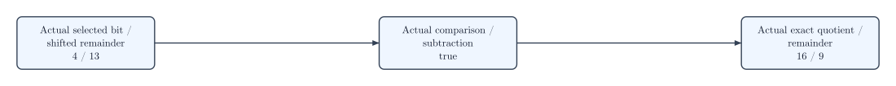
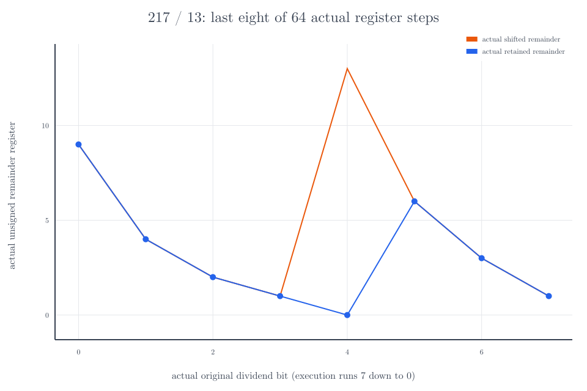
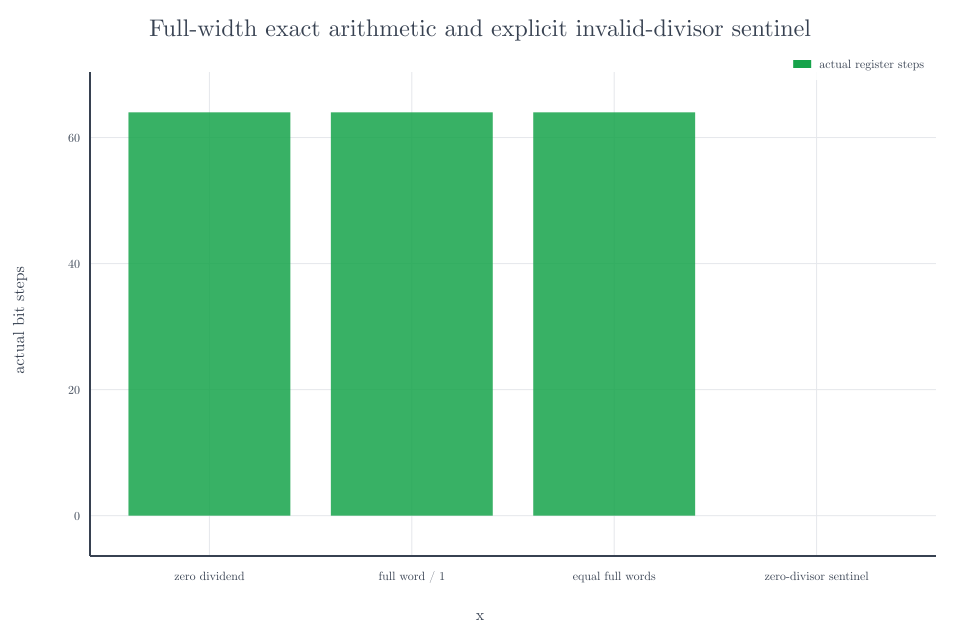
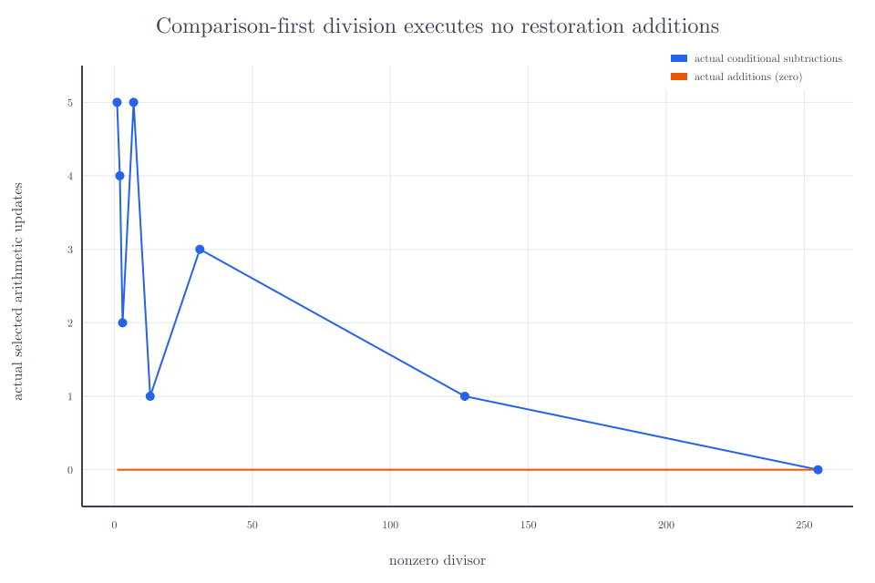

Restoring division: actual comparison-first64-bit register updates
Abstract
Unsigned integer division must produce an exact quotient and a remainder below the nonzero divisor. The canonical restoring producer reads all64 dividend bits, compares the shifted remainder before subtracting, and records its actual register states. The original 217/13,100/7 and 1000000/999 examples remain. The old report-local signed trial loop is removed, so hypothetical add-backs are no longer counted as executed additions.
Mechanism and mathematical scope
At each actual bit, append the next dividend bit to the current remainder. If the shifted remainder is at least D, subtract D and set that quotient bit; otherwise keep the shifted remainder and a zero quotient bit. The prefix invariant is
Appending a bit preserves the equality before the optional subtraction; the comparison chooses exactly the new quotient bit needed to restore the remainder bound. Induction over 64 actual register steps proves the final identity. This implementation tests before subtracting, so a failed comparison executes no negative subtraction and no add-back. A trial-subtract hardware variant is mathematically related but is a different operation history. Fixed-width arithmetic work is64 bit steps; selected subtraction count depends on the quotient bits.
A tiny actual producing history
The table and native concept diagram read the same producing execution. Every block below is a complete editable C++ program.
#include <dm/dm.hpp>
int main() {
namespace a = dm::algorithms;
namespace g = dm::graphics;
std::filesystem::create_directories("build");
auto t = a::restoring_division_trace(217, 13);
const auto &s = t.steps[t.steps.size() - 5];
std::print("\n| actual bit | actual remainder before | shifted remainder | actual subtract | actual " "remainder after | actual quotient after |\n| ---: | ---: | ---: | --- | ---: | ---: |\n");
for (const auto &e : t.steps)
std::print("| {} | {} | {} | {} | {} | {} |\n", e.bit,
e.remainder_before, e.shifted, e.subtracted,
e.remainder_after, e.quotient_after);
g::Diagram d;
d.node("n0", {0, 0},
std::format("Actual selected bit / shifted remainder\n{} / {}",
s.bit, s.shifted));
d.node("n1", {10, 0},
std::format("Actual comparison / subtraction\n{}", s.subtracted));
d.node("n2", {20, 0},
std::format("Actual exact quotient / remainder\n{} / {}",
t.analysis.result.quotient, t.analysis.result.remainder));
d.edge("n0", "n1").edge("n1", "n2");
d.save_svg("build/restoring_division_tiny.svg");
}| actual bit | actual remainder before | shifted remainder | actual subtract | actual remainder after | actual quotient after |
|---|---|---|---|---|---|
| 63 | 0 | 0 | false | 0 | 0 |
| 62 | 0 | 0 | false | 0 | 0 |
| 61 | 0 | 0 | false | 0 | 0 |
| 60 | 0 | 0 | false | 0 | 0 |
| 59 | 0 | 0 | false | 0 | 0 |
| 58 | 0 | 0 | false | 0 | 0 |
| 57 | 0 | 0 | false | 0 | 0 |
| 56 | 0 | 0 | false | 0 | 0 |
| 55 | 0 | 0 | false | 0 | 0 |
| 54 | 0 | 0 | false | 0 | 0 |
| 53 | 0 | 0 | false | 0 | 0 |
| 52 | 0 | 0 | false | 0 | 0 |
| 51 | 0 | 0 | false | 0 | 0 |
| 50 | 0 | 0 | false | 0 | 0 |
| 49 | 0 | 0 | false | 0 | 0 |
| 48 | 0 | 0 | false | 0 | 0 |
| 47 | 0 | 0 | false | 0 | 0 |
| 46 | 0 | 0 | false | 0 | 0 |
| 45 | 0 | 0 | false | 0 | 0 |
| 44 | 0 | 0 | false | 0 | 0 |
| 43 | 0 | 0 | false | 0 | 0 |
| 42 | 0 | 0 | false | 0 | 0 |
| 41 | 0 | 0 | false | 0 | 0 |
| 40 | 0 | 0 | false | 0 | 0 |
| 39 | 0 | 0 | false | 0 | 0 |
| 38 | 0 | 0 | false | 0 | 0 |
| 37 | 0 | 0 | false | 0 | 0 |
| 36 | 0 | 0 | false | 0 | 0 |
| 35 | 0 | 0 | false | 0 | 0 |
| 34 | 0 | 0 | false | 0 | 0 |
| 33 | 0 | 0 | false | 0 | 0 |
| 32 | 0 | 0 | false | 0 | 0 |
| 31 | 0 | 0 | false | 0 | 0 |
| 30 | 0 | 0 | false | 0 | 0 |
| 29 | 0 | 0 | false | 0 | 0 |
| 28 | 0 | 0 | false | 0 | 0 |
| 27 | 0 | 0 | false | 0 | 0 |
| 26 | 0 | 0 | false | 0 | 0 |
| 25 | 0 | 0 | false | 0 | 0 |
| 24 | 0 | 0 | false | 0 | 0 |
| 23 | 0 | 0 | false | 0 | 0 |
| 22 | 0 | 0 | false | 0 | 0 |
| 21 | 0 | 0 | false | 0 | 0 |
| 20 | 0 | 0 | false | 0 | 0 |
| 19 | 0 | 0 | false | 0 | 0 |
| 18 | 0 | 0 | false | 0 | 0 |
| 17 | 0 | 0 | false | 0 | 0 |
| 16 | 0 | 0 | false | 0 | 0 |
| 15 | 0 | 0 | false | 0 | 0 |
| 14 | 0 | 0 | false | 0 | 0 |
| 13 | 0 | 0 | false | 0 | 0 |
| 12 | 0 | 0 | false | 0 | 0 |
| 11 | 0 | 0 | false | 0 | 0 |
| 10 | 0 | 0 | false | 0 | 0 |
| 9 | 0 | 0 | false | 0 | 0 |
| 8 | 0 | 0 | false | 0 | 0 |
| 7 | 0 | 1 | false | 1 | 0 |
| 6 | 1 | 3 | false | 3 | 0 |
| 5 | 3 | 6 | false | 6 | 0 |
| 4 | 6 | 13 | true | 0 | 16 |
| 3 | 0 | 1 | false | 1 | 16 |
| 2 | 1 | 2 | false | 2 | 16 |
| 1 | 2 | 4 | false | 4 | 16 |
| 0 | 4 | 9 | false | 9 | 16 |

The retained original experiment
#include <dm/dm.hpp>
int main() {
namespace a = dm::algorithms;
namespace g = dm::graphics;
std::filesystem::create_directories("build");
std::print("\n| original dividend | original divisor | actual quotient | actual remainder | actual bit " "steps |\n| ---: | ---: | ---: | ---: | ---: |\n");
for (auto[n, d] : std::vector<std::pair<std::uint64_t, std::uint64_t>>{
{217, 13}, {100, 7}, {1000000, 999}
}) {
auto t = a::restoring_division_trace(n, d);
std::print("| {} | {} | {} | {} | {} |\n", n, d,
t.analysis.result.quotient, t.analysis.result.remainder,
t.analysis.bit_steps);
}
auto t = a::restoring_division_trace(217, 13);
std::vector<double> x, y, z;
for (std::size_t i = 56; i < t.steps.size(); ++i) {
x.push_back(t.steps[i].bit);
y.push_back(t.steps[i].shifted);
z.push_back(t.steps[i].remainder_after);
}
auto p = g::RPlot::create();
p.lines(x, y, "actual shifted remainder", {234, 88, 12}).lines(
x, z, "actual retained remainder", {37, 99, 235}).points(x, z,
{37, 99, 235},
5).title(
"217 / 13: last eight of 64 actual register steps").x_label(
"actual original dividend bit (execution runs 7 down to 0)").y_label(
"actual unsigned remainder register");
p.save_svg("build/restoring_division_original.svg");
}| original dividend | original divisor | actual quotient | actual remainder | actual bit steps |
|---|---|---|---|---|
| 217 | 13 | 16 | 9 | 64 |
| 100 | 7 | 14 | 2 | 64 |
| 1000000 | 999 | 1001 | 1 | 64 |

Explicit controls
#include <dm/dm.hpp>
int main() {
namespace a = dm::algorithms;
namespace g = dm::graphics;
std::filesystem::create_directories("build");
const auto maximum = std::numeric_limits<std::uint64_t>::max();
std::vector<std::pair<std::uint64_t, std::uint64_t>> cases{
{0, 7}, {maximum, 1}, {maximum, maximum}, {217, 0}
};
std::vector<std::string> labels{"zero dividend", "full word / 1",
"equal full words", "zero-divisor sentinel"};
std::vector<double> counts;
std::print("\n| actual control | valid divisor | quotient | remainder | actual bit steps |\n| --- | --- " "| ---: | ---: | ---: |\n");
for (std::size_t i = 0; i < cases.size(); ++i) {
auto r = a::restoring_division_analyze(cases[i].first, cases[i].second);
counts.push_back(r.bit_steps);
std::print("| {} | {} | {} | {} | {} |\n", labels[i], r.valid_divisor,
r.result.quotient, r.result.remainder, r.bit_steps);
}
auto p = g::RPlot::barplot(counts, labels, "actual register steps");
p.title("Full-width exact arithmetic and explicit invalid-divisor sentinel").y_label("actual bit steps");
p.save_svg("build/restoring_division_controls.svg");
}| actual control | valid divisor | quotient | remainder | actual bit steps |
|---|---|---|---|---|
| zero dividend | true | 0 | 0 | 64 |
| full word / 1 | true | 18446744073709551615 | 0 | 64 |
| equal full words | true | 1 | 0 | 64 |
| zero-divisor sentinel | false | 0 | 0 | 0 |

Actual selected work and sensitivity
#include <dm/dm.hpp>
int main() {
namespace a = dm::algorithms;
namespace g = dm::graphics;
std::filesystem::create_directories("build");
std::vector<double> x, y, z;
std::print("\n| divisor for N=217 | actual comparisons | actual subtractions | actual additions | " "hypothetical trial restores |\n| ---: | ---: | ---: | ---: | ---: |\n");
for (std::uint64_t d : {1, 2, 3, 7, 13, 31, 127, 255}) {
auto r = a::restoring_division_analyze(217, d);
x.push_back(d);
y.push_back(r.subtractions);
z.push_back(r.additions);
std::print("| {} | {} | {} | {} | {} |\n", d, r.comparison_tests,
r.subtractions, r.additions, r.hypothetical_restores);
}
auto p = g::RPlot::create();
p.lines(x, y, "actual conditional subtractions", {37, 99, 235}).lines(
x, z, "actual additions (zero)", {234, 88, 12}).points(x, y,
{37, 99, 235}, 5).title("Comparison-first division executes no restoration additions").x_label("nonzero divisor").y_label("actual selected arithmetic updates");
p.save_svg("build/restoring_division_work.svg");
}| divisor for N=217 | actual comparisons | actual subtractions | actual additions | hypothetical trial restores |
|---|---|---|---|---|
| 1 | 64 | 5 | 0 | 59 |
| 2 | 64 | 4 | 0 | 60 |
| 3 | 64 | 2 | 0 | 62 |
| 7 | 64 | 5 | 0 | 59 |
| 13 | 64 | 1 | 0 | 63 |
| 31 | 64 | 3 | 0 | 61 |
| 127 | 64 | 1 | 0 | 63 |
| 255 | 64 | 0 | 0 | 64 |

API and interpretation
The canonical producer and full-width guards were already implemented during the non-restoring/Newton conversion; this report reuses them. It processes all64 bits, including leading-zero prefixes. The original figure selects the last eight actual records and names that selection explicitly. Zero divisor preserves a legacy{0,0,0}sentinel accompanied by valid_divisor=false; it is not a defined division result. Hypothetical trial restores are a comparison with a different hardware formulation, not executed additions or measured wasted work. Exact full-width identities are checked with widened independent integer arithmetic.
Reusable producers, fixtures and histories live in the canonical C++ library. Captured records own their values and do not come from a separate report replay. Selected counters and record/scalar policies are specified at their API boundaries; they are not peak-byte or wall-time budgets. Synthetic structural inputs are controlled fixtures for these mechanisms.
References
Verification: 214 scoped native cases;15 directly instrumented ASan/UBSan
cases;127 executable public examples;567/567 full-file definitions;10
hovers;1340 independent records/58514 checks;frozen compatibility across six
changed legacy families;independent NumPy tensor-training comparisons with
recorded tolerances;12 checkout/installed standalone headers and linked
consumer;41 executed programs and41 inspected figures with both exports.
Receipts: build/mepml-conversion/batch-314-323/.